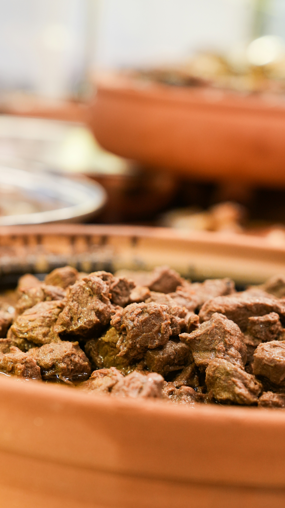

Hungarian goulash is a slow-cooked beef stew flavored with sweet paprika, onions, garlic, and root vegetables.
It has a thick, slightly brothy consistency and is traditionally served with bread or dumplings.
Heat oil in a large pot and cook onions until soft and golden.
Add garlic and paprica. Stir quickly.
Add beef cubes and sear them until lightly browned on all sides.
Pour in water, bring to a boil, then reduce heat and simmer.
Cook for about 90 minutes.
Add tomatoes and potetoes dices. Continue cooking for another 20 - 30 minutes.
Add salt and pepper to taste.